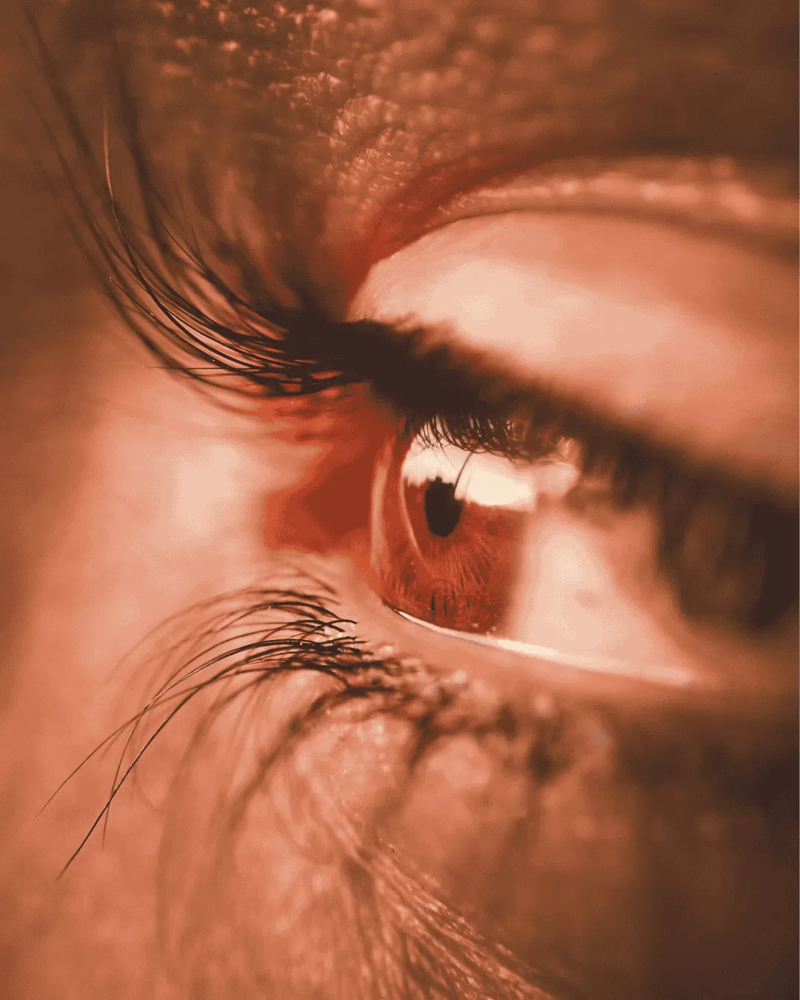
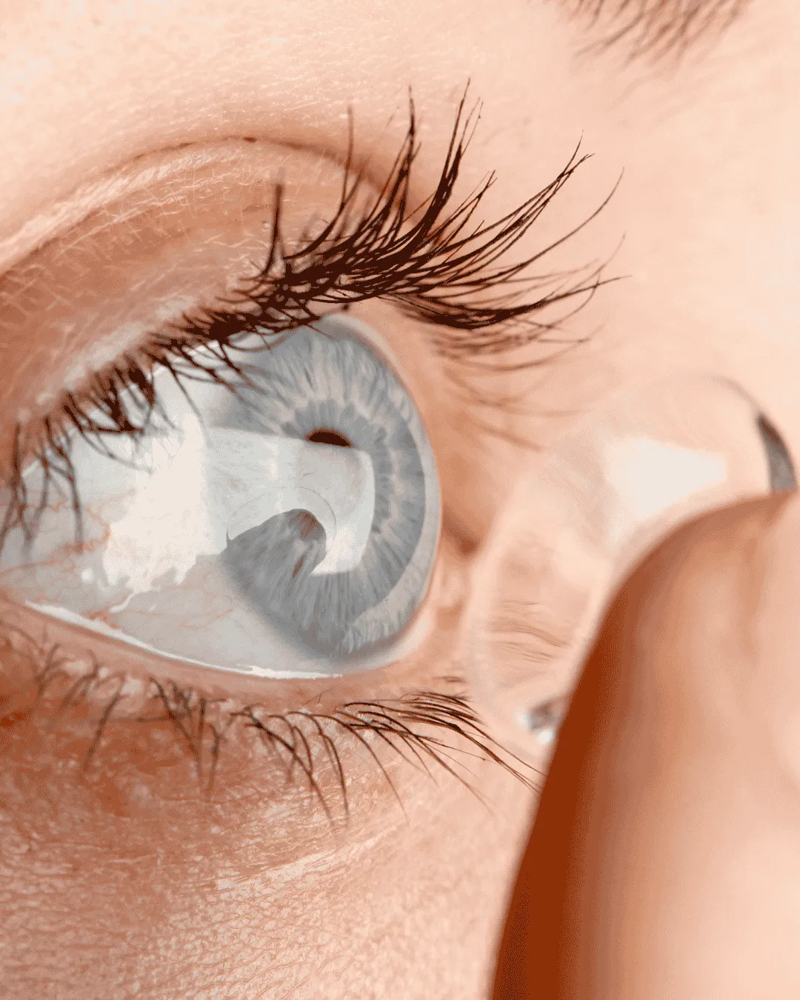

Examen visual
Revisión completa de tu salud visual con equipos de última generación. Sin compromiso.
Cuidamos tu salud visual con la mayor profesionalidad y los mejores equipos.
Revisión completa de tu salud visual con equipos de última generación. Sin compromiso.
Determinamos tu graduación exacta con foróptero digital y test subjetivo de alta precisión.
Medición de la presión intraocular para la detección precoz del glaucoma. Sin dolor.
Corrección nocturna de la miopía. Duermes con lentillas y ves sin ellas durante el día.
Adaptación personalizada con topografía corneal y seguimiento incluido.
Biomicroscopía, topografía corneal, consulta pediátrica y más servicios especializados.

Sin compromiso
Realizamos una revisión completa de tu salud visual con equipos de última generación. Medimos agudeza visual, presión intraocular, fondo de ojo y mucho más.
Refracción automática y subjetiva
Determinamos tu graduación exacta con foróptero digital y test subjetivo.
Tonometría (presión ocular)
Detección precoz de glaucoma. Sin contacto y sin dolor.
Biomicroscopía (lámpara de hendidura)
Exploración del polo anterior del ojo con alta resolución.
Evaluación de la visión binocular
Detectamos problemas de convergencia, acomodación y estrabismo.
Proceso completo
Adaptamos lentes de contacto para cualquier tipo de defecto visual: miopía, hipermetropía, astigmatismo y presbicia. Incluimos seguimiento hasta que te sientas cómodo.
Topografía corneal
Mapeamos tu córnea en 3D para elegir la lentilla perfecta.
Prueba de adaptación
Te llevamos unas muestras a casa para que las pruebes sin compromiso.
Revisión de seguimiento
Comprobamos que la lente asienta bien y que tu visión es óptima.

La Ortoqueratología es una técnica que consiste en llevar unas lentillas especiales mientras duermes. Al levantarte, tu córnea habrá adoptado la forma correcta y verás perfectamente todo el día, sin gafas ni lentillas.
¿Para quién es?
Personas con miopía hasta -6D y/o astigmatismo hasta -1.75D. Especialmente recomendada para niños con miopía progresiva.
Beneficios principales
Control de la miopía en niños · Libertad visual diurna · Sin cirugía · Reversible en todo momento.
Proceso de adaptación
Topografía corneal → elección de lente → seguimiento en 1 día, 1 semana y 1 mes.
Miopía máx.
De sueño
Visión nítida
Consulta inicial
La tonometría mide la presión intraocular (PIO). Una presión elevada puede indicar glaucoma, una enfermedad que daña el nervio óptico de forma silenciosa e irreversible si no se trata.
Utilizamos tonómetro de no contacto (aire). Es completamente indoloro, no requiere anestesia y el resultado es inmediato. Dura apenas unos segundos.
Recomendamos medirla en cada revisión anual. Si tienes antecedentes familiares de glaucoma, miopía alta o más de 40 años, es especialmente importante.
Valores normales: entre 10 y 21 mmHg. Si el resultado está fuera de rango, te orientamos y derivamos al oftalmólogo de referencia.

Tecnología de precisión
La refracción es el proceso mediante el cual determinamos con exactitud tu defecto visual: miopía, hipermetropía, astigmatismo o presbicia. Combinamos autorefractometría automática con un test subjetivo personalizado.
Autorefractómetro digital
Medición objetiva e instantánea del defecto refractivo como punto de partida.
Test subjetivo con foróptero
Ajuste fino de la graduación según tu percepción visual real, letra a letra.
Visión binocular
Comprobamos que ambos ojos trabajen de forma coordinada y sin tensión.
Exploración detallada del segmento anterior del ojo con lámpara de hendidura. Detectamos alteraciones en córnea, cristalino y conjuntiva.
Mapa tridimensional de la superficie de tu córnea. Esencial para la adaptación de lentes de contacto y detección del queratocono.
Revisión visual adaptada a niños. Detectamos ambliopía, estrabismo y miopía progresiva a tiempo para un tratamiento eficaz.
Seguimiento periódico de la progresión de miopía en niños y jóvenes con lentes MiSight, Orto-K o gafas de control especializadas.
Diagnóstico y pauta de tratamiento del síndrome de ojo seco. Evaluamos la calidad lagrimal y recomendamos la solución más adecuada.
Si detectamos algo que requiere atención médica especializada, te orientamos y gestionamos la derivación al oftalmólogo de referencia.
Conoce los defectos visuales más comunes, cómo afectan a tu día a día y cuándo acudir al especialista.